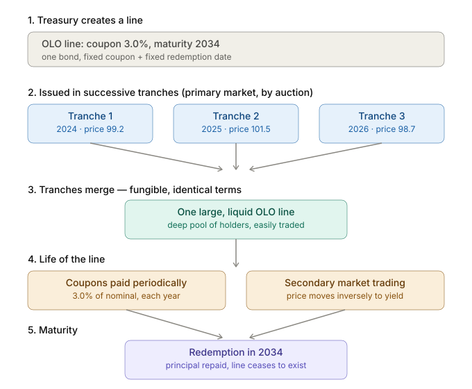

Belgium Government Bonds
what is a bond?
A bond is a debt instrument representing a loan extended by a creditor (the lender) to a debtor (the borrower, or issuer). The bond is held by the creditor as an asset; the issuer carries the liability and is obliged to repay the principal at maturity plus periodic interest — the coupon — over the life of the debt. An entity in need of capital can raise it on the financial markets by issuing a bond. Prospective buyers assess the issuer's creditworthiness, and this determines the cost of the debt — more precisely, the interest the issuer must pay: the more creditworthy the issuer, the lower the interest demanded. Market conditions also affect the rate, since prevailing interest rates reflect the opportunity cost of capital — money lent to one borrower could have been deployed elsewhere.
There are different types of bonds on the market, and a bond is defined by its characteristics. Below is an overview of the main characteristics:
| Characteristic | Examples |
|---|---|
| Issuer | government, supranational, corporate, municipal, financial institution |
| Coupon structure | zero-coupon, fixed-rate, floating-rate; paid annually or semi-annually |
| Maturity | short, medium, long-dated, perpetual |
| Embedded options | callable, putable, convertible |
| Seniority / security | seniority — rank of the claim in the capital structure; security — whether the claim is backed by specific collateral |
| Principal / indexation | inflation-linked bonds (e.g. TIPS, OATi) |
Bonds issued by the Belgium Government
Measured by total value of securities outstanding, the global bond market is the largest securities market, exceeding the global equity market. I will therefore focus on a single instrument: the Obligation Linéaire Ordinaire / Lineaire Obligatie (OLO) of the Belgian federal government, a plain-vanilla bond with a fixed coupon, a bullet maturity, and no embedded options.1 The full description of OLOs can be found on the Belgium Debt Agency (BDA) website.
OLOs are dematerialised: there is no physical certificate representing the bond. Ownership exists purely as a book entry in an electronic securities-settlement system — the National Bank of Belgium's system, to which the international central securities depositories Euroclear and Clearstream have access. The name "linear" comes from the way the bond is built. A single OLO is a line defined by one fixed coupon.2 and one fixed maturity date, and it is issued in successive tranches: the outstanding amount of a given line grows with each tranche. This is what creates liquidity — capital is funnelled into a few very large, standardised lines that are actively traded, rather than fragmented across many small bonds.
The "linear" property follows from the fact that every security in a line carries the same nominal coupon rate and redemption date, regardless of which tranche or auction it came from. The contractual terms are identical across tranches; only the issue price differs from one auction to the next, depending mainly on market conditions. A closely related property is fungibility: because all securities in a line are contractually identical, any unit is interchangeable with any other, which is what allows tranches issued at different times to merge into one consolidated line. A final property is that an OLO's components — each coupon and the principal — can be separated and traded as individual zero-coupon securities. This is called stripping (Separate Trading of Registered Interest and Principal Securities, STRIPS), producing coupon strips and a principal strip. Only fixed-rate OLOs can be stripped, because each detached piece must be a known amount payable on a known date.
The picture below shows the lifecycle of such an OLO.

Primary Market mechanics of the OLO
The Belgian Debt Agency issues new OLOs and tranches according to a published calanderof auction dates. At an auction the Treasury either reopens an existing line or launches a new one, and bidding is open to its primary dealers. Each dealer submits competitive bids, where a bid is a pair: a price and the quantity the dealer will buy at that price. Because the line's coupon and maturity are fixed, dealers compete only on price, which maps directly (and inversely) to yield. The Treasury ranks the bids from highest price to lowest and fills from the top down until it has sold its target amount; the lowest price still accepted is the stop price. Because this is a multiple-price auction, each successful bidder pays the price it actually bid, so the weighted-average price paid sits above the stop price. Separately, primary dealers hold a privilege — a non-competitive subscription — that lets them take an additional allotment at the weighted-average price without bidding a specific price. Auction results are published on the BDA website of the BDA. An example of the process can be seen below.

Secondary Markets for OLO
Once primary dealers have acquired bonds at auction, those bonds trade on three secondary venues. By far the largest is the over-the-counter (OTC) dealer market, where transactions take place bilaterally, away from any trading venue. The second venue is a set of electronic platforms split by counterparty: dealer-to-dealer (B2B) platforms such as MTS Belgium and BrokerTec, and dealer-to-customer (B2C) platforms such as Tradeweb, BondVision and Bloomberg. The third is the listed exchange, Euronext Brussels, which carries the smallest share of volume and mainly serves retail investors trading through their bank. Price formation is quote-driven, which differs from the order-driven equity markets most people are used to. In an order-driven market, a central limit order book matches anonymous buy and sell orders, and the price is whatever the last match cleared at. In a quote-driven market, designated dealers — here, the OLO primary dealers — continuously quote a price at which they will buy (the bid) and a price at which they will sell (the ask), and you trade against the dealer's balance sheet rather than against another investor's order. The dealer warehouses the bond as inventory and earns the bid-ask spread. Liquidity is ensured by the primary dealers as a contractual obligation in the specifications they sign with the Belgian State, which requires them to quote negotiable prices to their clients and on selected electronic platforms. The purpose is to guarantee that a price exists at all times.
the yield curve of the OLOs
On the bond market, prices are not compared directly, because price is a poor unit of comparison: each bond has its own coupon, maturity and principal. Instead the market uses the bond's yield. The relationship between price and yield is given by:
where \(P\) is the price, \(C\) is the coupon payment per period, \(F\) is the principal repaid at maturity, \(T\) is the number of periods, and \(y\) is the yield. Because an OLO's coupon and principal are fixed, price and yield are two expressions of the same fact: given one, the other is determined. Crucially, they move inversely — since the cash flows are fixed, paying a higher price for them means earning a lower return, and vice versa. The interactive graph below shows this lock: changing the yield directly moves the price.
Because yield is the comparable unit, the market forms its view in yield terms — at every maturity at once. That set of required yields, maturity by maturity, is the yield curve. The question each investor is implicitly answering is: what return do I demand to hold Belgian government risk for a given horizon? The factors driving that answer include European Central Bank (ECB) policy, Euribor expectations, Belgium's credit standing, broad risk sentiment, and the supply of Belgian federal debt. Each affects the curve in its own way: if, for example, the ECB signals higher rates, required yields on OLOs rise and, as a direct consequence, their prices fall.
The interactive graph below shows how the curve shifts in response to such signals, and how those shifts reprice the individual bonds.
Why must all OLOs price off one common curve? The reason is the law of one price: two bundles of identical future cash flows must trade at the same price, or there is a riskless profit to be had. Recall the stripping insight — a coupon bond is a portfolio of single dated cash flows (zeros). Each dated euro of risk-free cash flow is an atomic building block with exactly one market price (its discount factor), and a bond is simply a particular bundle of these blocks, so its price is forced to equal the sum of its blocks' prices. The curve is nothing more than the price list for the atomic blocks; bonds sit on (or very close to) it because they are all assembled from the same blocks. The mechanism that enforces this is arbitrage: if a bond traded below the value of its stripped components, a dealer could buy the bond, strip it, and sell the pieces for more — and the act of doing so bids the bond's price back up. Strip-and-reconstitute therefore pins each OLO onto the curve from both sides.
footnotes
1
The staatsbon is the retail-facing sibling of the OLO, but is a different financial instrument the goverment uses for raising capital.
2
OLO can have fixed or floating rate. The majority has fixed coupon rates, but the BDA allows for floating coupon rate based on a reference rate Euro Interbank Offered Rate (Euribor). As these marginally traded will not cover these.